LEASING GUIDEقنا الجديدة · مصر
هابينس بلازا
عند مدخل قنا الجديدة، تلتقي واجهات المحلات والمطاعم بالفندق والبحيرة حول بلازا مساحتها ٤٬٠٠٠ م².
يقع المشروع في الحي الأول بالقرب من طريق قنا–سفاجا ومحور قنا–الطيبة.
شاهد طريق الوصول إلى المشروع
تنزيل مسار الوصولالمرحلة الأولى · الفندق والأنشطة الترفيهية
من غرف فندق بلازا إلى مطعم الجزيرة ونوادي الصحة واللياقة. الافتتاح المقرر في ديسمبر ٢٠٢٦.
جولة المرحلة الأولى
02:47تحميل الجولةبلازا واحدة تجمع كل مراحل المشروع
تجتمع جميع مراحل هابينس بلازا حول بلازا مشتركة مساحتها ٤٬٠٠٠ م². تربط البلازا بين المحلات والمطاعم والفندق والأنشطة الترفيهية.
مساحة البلازا المشتركة
أنشطة المرحلة الأولى
يضم هذا الجزء من المشروع فندق بلازا ومطعم بوخارست بلاك وجوي بارك وجورو فيت وأورا، إلى جانب منفذ الوجبات الخفيفة وصيدلية هابينس.
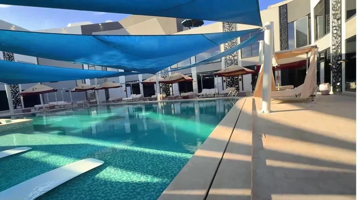

صالة طعام وبار مشروبات وتراس علوي يطل على البلازا.
شاهد فيديو النشاط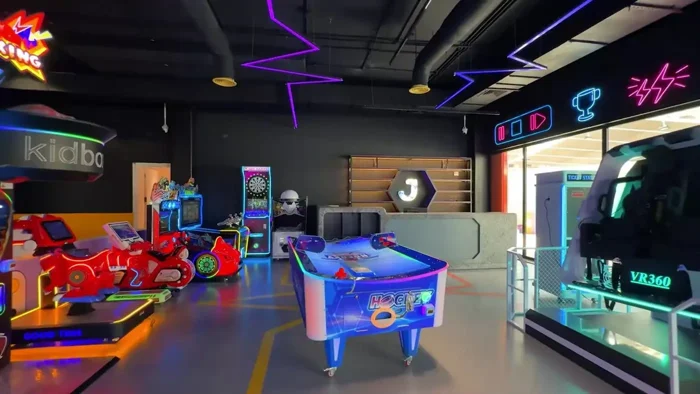
أركيد ومحاكيات حركة، ولعب مبطّن وألعاب خارجية.
شاهد فيديو النشاط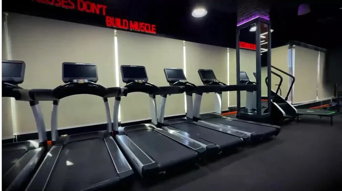
صالة كارديو وتدريب واستوديو للتمارين الجماعية.
شاهد فيديو النشاط
النادي الصحي النسائي للعناية والتصفيف، مع ساونا وجاكوزي.
شاهد فيديو النشاط
سندوتشات خفيفة وآيس كريم ومشروبات بجلسات خارجية.
شاهد فيديو النشاط
صيدلية تخدم زوّار البلازا ونزلاء الفندق. افتح صفحة الصيدلية لوسائل التواصل.
صفحة الصيدلية شاهد فيديو النشاطفندق
بلازا
يضم فندق بلازا ١٤ غرفة وجناحًا، منها الرويال سويت رقم ٧ في الدور الأرضي. افتح دليل الفندق لاستكشاف كل غرفة.

فسحة
على البحيرة
جلسات مظلّلة على الجزيرة أمام بوخارست بلاك. تمتد مياه البحيرة حول الجلسات وتطلّ عليها واجهة المطعم.

داخل
الرويال سويت
واحد من ١٤ غرفة وجناحًا. تجمع تفاصيله الكلاسيكية بين منطقة النوم وجلسة مستقلة في الدور الأرضي.
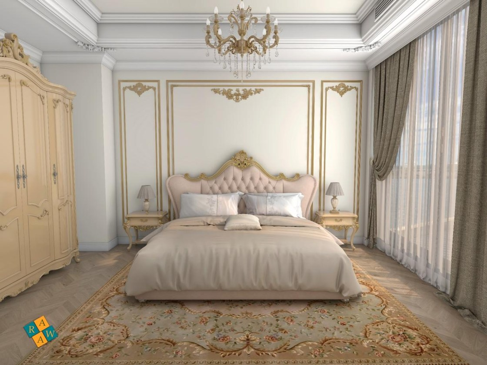
جزيرة بوخارست والبحيرة
تظهر جلسات جزيرة بوخارست تحت المظلات، وتحيط بها مياه البحيرة أمام واجهة المطعم.
ويضم تصميم الجزيرة مساحة للمناسبات والاحتفالات.
شاهد الجولة داخل بوخارست بلاكغرف الفندق وأجنحته
١٤ غرفة وجناحًا، سبعة في كل دور. اختر الغرفة للاطلاع على صورتها وتفاصيل تأثيثها. الأرقام من ١ إلى ١٤ هي أرقام التصميم، وبجوارها رقم الباب الموثّق عند توافره.
الدور الأرضي
الدور الأول

الجناح اليوناني
سرير مزدوج بخلفية زرقاء ومعيشة مستقلة بكنبة ركنية. تضم وحدة الضيافة ثلاجة صغيرة، وفي الحمام دش زجاجي وكسوة رمادية مزرقة.

الغرفة النوبية التراثية
سرير مزدوج تحت قوس أزرق وجلسة بكرسيين. تجمع وحدة الضيافة بين الشاشة والثلاجة والغلاية، ويتكرر اللون البرتقالي في حوض الحمام.
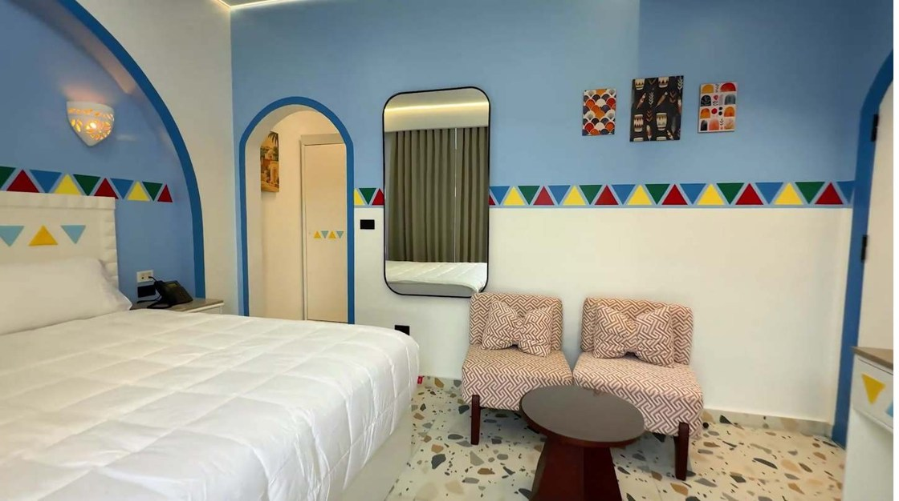
الغرفة النوبية بريميوم
منطقة نوم عريضة وجلسة بكرسيين أمام حائط سماوي بزخارف نوبية. تضم الخزانة خزنة إلكترونية، والحمام حوضًا برتقاليًا وفاصل دش زجاجيًا.

الغرفة اليونانية الكلاسيكية
سرير مزدوج وخزانة بيضاء جرّارة وركن جلوس. تقابل السرير شاشة ووحدة ضيافة وثلاجة صغيرة، وتمتد الكسوة الزرقاء المعرّقة إلى الحمام.

الغرفة اليونانية التوأم
سريران منفصلان يربطهما كومود أوسط وجلسة بكرسيين قرب الفتحة المطلة على الفناء. تضم الغرفة خزانة جرّارة وثلاجة صغيرة وحمامًا بألوان زرقاء.

الغرفة الاستوائية
سرير مزدوج مقابل شاشة، وكرسيان بتفاصيل منسوجة. تميّز الغرفة ثلاث وحدات إنارة معلّقة وسقف بمظهر الخشب، وفي الحمام حوض أزرق ونقشة نباتية.
الرويال سويت
في التصميم غرفة نوم بسرير مبطّن، ومعيشة منفصلة بكنبة وشاشة. يظهر دولاب كلاسيكي ونجف وأطر جدارية ذهبية، وستائر ممتدة حتى الأرض.
مسقط جناح الرويال سويت

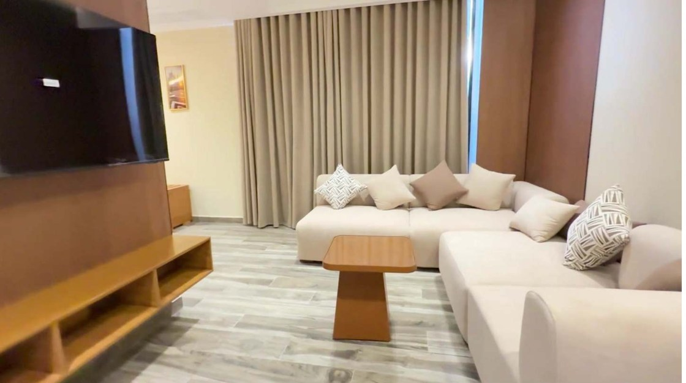
جناح ألترا مودرن
سرير مزدوج ومعيشة بكنبة ركنية يفصلهما عنصر خشبي. توجد شاشتان ودولاب بثلاث ضلف وتسريحة بمرآة مضاءة، وحمام بدش زجاجي وموزاييك أزرق.

الجناح الإسباني
سرير مزدوج بتنجيد أخضر ومعيشة بكنبة وكرسيين أمام واجهة منحنية. يضم الجناح تسريحة ووحدة ضيافة، وحمامًا داكنًا بحوض ذهبي المظهر.

الغرفة الأمريكية كومفورت
سرير مزدوج بين أباجورتين وكرسيان منجّدان وطاولة دائرية. تضم وحدة الضيافة ثلاجة وغلاية، ويجاورها رف للأمتعة. الحمام بدش زجاجي.

الغرفة الأمريكية أوربان
سرير مزدوج أمام شاشة وركن جلوس بكرسيين. خلفية السرير بإطارات خضراء رمادية، ووحدة الضيافة برفوف وثلاجة. في الحمام موزاييك وفاصل دش أسود.

الغرفة الأمريكية المعاصرة
سرير مزدوج وخزانة خشبية بثلاث ضلف وجلسة بكرسيين. تميّزها لوحات نباتية وستائر فاتحة. تضم شاشة ووحدة ضيافة وغلاية وحمامًا بدش زجاجي.

غرفة اللوفت الصناعية
سريران منفصلان أمام حائط من الطوب الأبيض، مع كرسيين بإطار معدني أحمر. تضم خزانة بواجهة عاكسة وشاشة ووحدة ضيافة وحمامًا بكسوة رمادية.
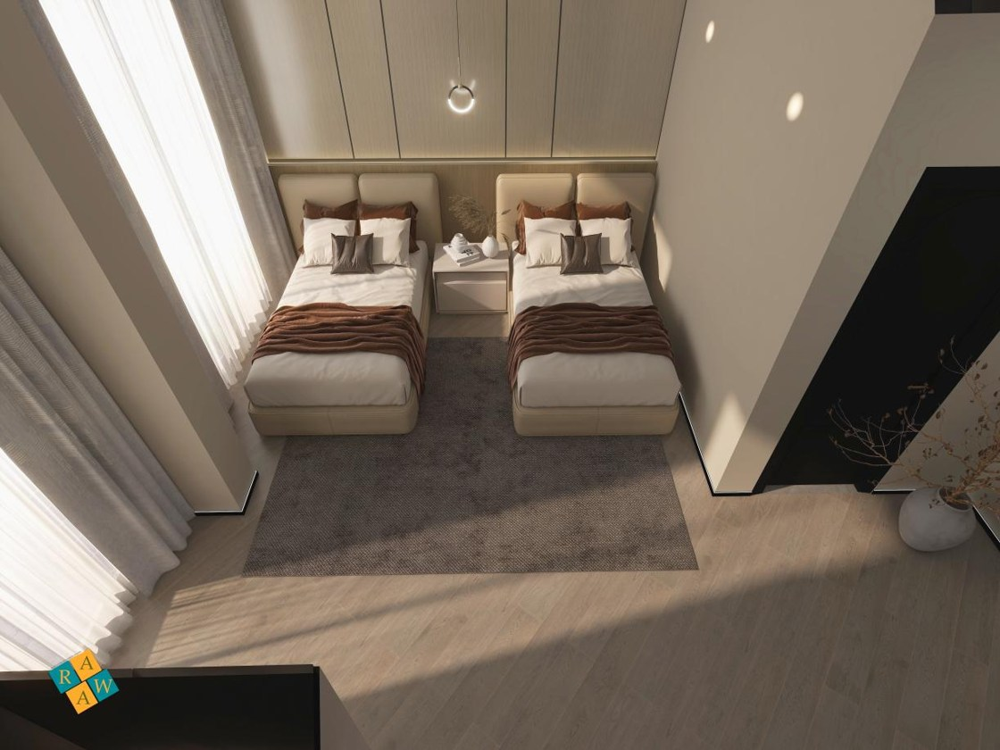
غرفة ألترا مودرن
تُظهر لوحة التصميم سريرين منفصلين بألوان هادئة وإضاءة جانبية. ويُظهر مسقط الوحدة النهائية بالدور الأول جلسة بكرسيين وطاولة وتخزينًا وحمامًا خاصًا.
المالك والمطوّر
شركة الحبيب للتنمية والاستثمار هي المالكة والمطوّرة لمشروع هابينس بلازا. تعمل المجموعة في صعيد مصر في تجارة التجزئة والتطوير العقاري والمقاولات والاستثمار الزراعي، ومن أعمالها الحبيب ماركت ومزارع الحبيب.
تتولى شركة الحبيب للهندسة والمقاولات أعمال التنفيذ، وتتولى JKFacilities إدارة المشروع وتشغيله وتنسيق التأجير.
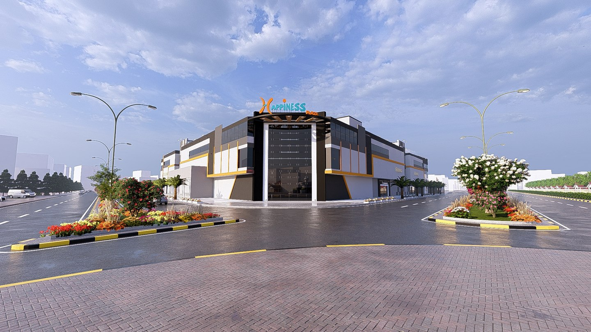
المرحلة الثانية · المحلات التجارية
اختر الدور وابحث برقم الوحدة أو مساحتها. افتح بطاقة الوحدة للاطلاع على حدودها وجيرانها في المخطط، ثم استكشف الممر والصور المتاحة لموقعها.
شاهد المحلات أثناء التنفيذ ↙أمام هايبر ماركت الحبيب
المحلات التجارية أثناء التنفيذ
تبدأ الجولة بنظرة من البلازا إلى واجهات المحلات، ثم تنتقل إلى الممرات الداخلية والأدوار المطلة عليها.
المرحلة الثالثة · هايبر ماركت الحبيب
٥٬٥٦٢ م² هي مساحة الوحدة B01 على مخطط التأجير. ويذكر ملف تصميم الهايبر، الذي بدأ في ٢٠٢٤، مساحة ٧٬٠٠٠ م² للمشروع التصميمي في البدروم.
تبيّن لوحة التصميم توزيع ممرات الرفوف، صفوف الكاشيرات ومسار الدخول. ويشمل البرنامج الأغذية الطازجة، والسلع سريعة التداول، والمنسوجات والسلع غير الغذائية.
من تصميم الحبيب ماركت
هذه صور من الأرشيف التصميمي للحبيب ماركت. تُبيّن اللوحة أعلاه توزيع وحدة الهايبر B01 في هابينس بلازا.
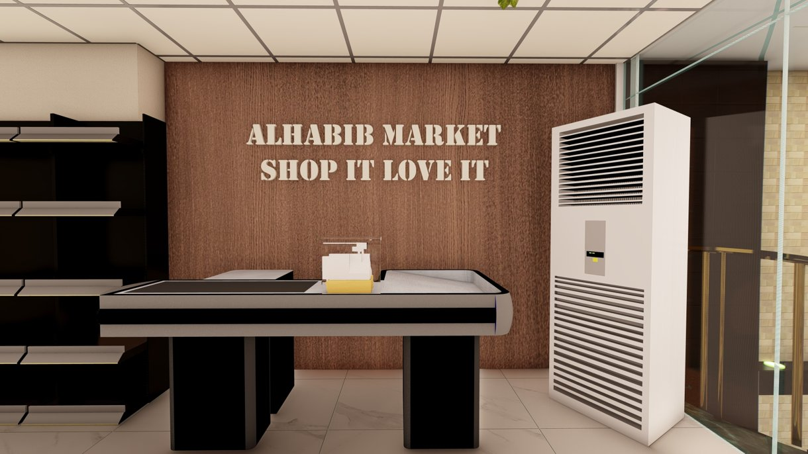
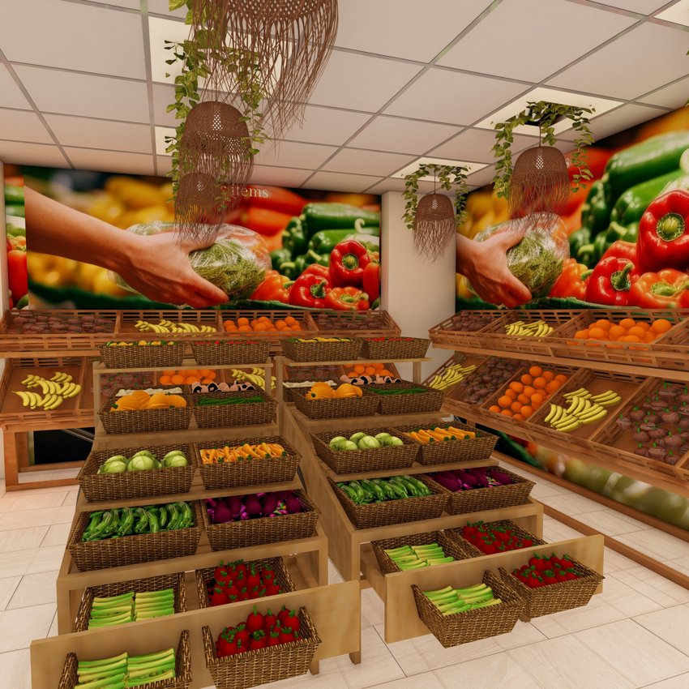

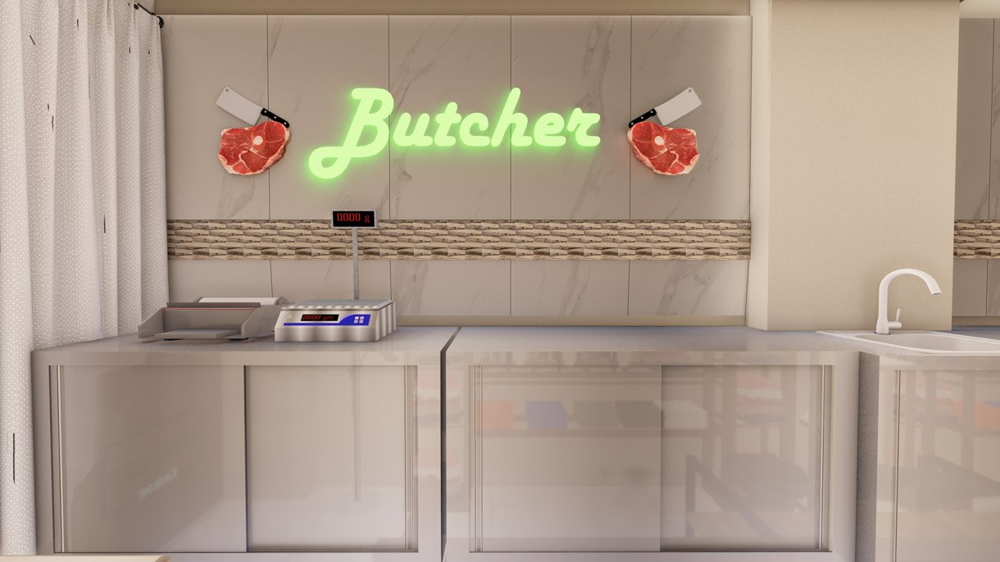

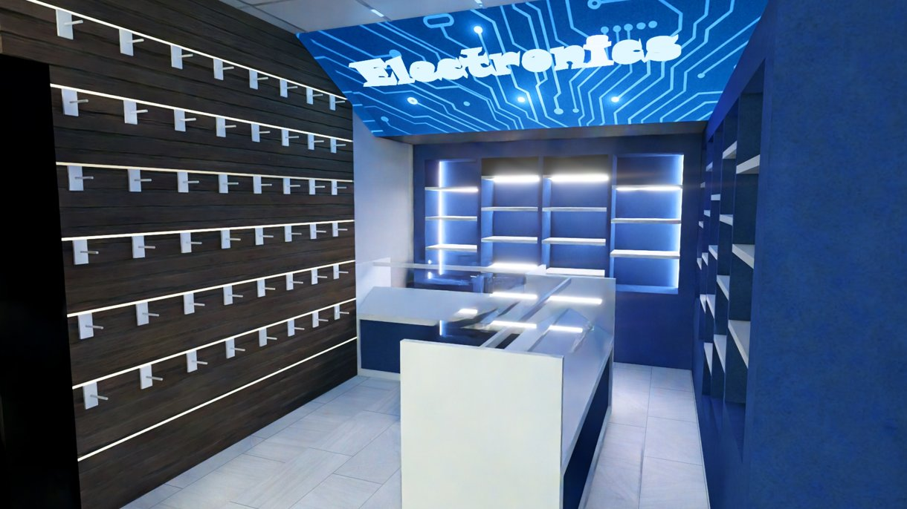
سوق قنا وتوقع الزيارات
تقديرات السكان في ١ يوليو ٢٠٢٥ تعطي ١٬٧٦٩ مقيمًا لقنا الجديدة، و٢٧٢٬٩٠٥ لقسم قنا، و٥٣٦٬٩٤١ لمركز قنا. مجموع النطاقات الثلاثة ٨١١٬٦١٥ مقيمًا، من إجمالي ٣٬٧٦٤٬٧٩١ بالمحافظة.
شكّلت تجارة الجملة والتجزئة ١٥٪ من الناتج المحلي لمحافظة قنا في ٢٠٢٠/٢٠٢١ بحسب وزارة التخطيط. يصف المؤشر وزن التجارة في اقتصاد المحافظة. أمّا حجم الطلب على الموقع فيعتمد على تكرار الرحلة من مدينة قنا وجاذبية الهايبر والمطاعم والترفيه.
التقدير لزيارات المقيمين بعد افتتاح المول التجاري واستقرار تشغيله مع المرحلة الأولى. قد يزور الشخص المشروع أكثر من مرة. حركة المسافرين والسياح والزيارات من محافظات أخرى خارج الحساب.
تقدير الزيارات والإنفاق
نسب الوصول وطريقة الحساب
| الافتراض | متحفظ | أساسي | مرتفع |
|---|---|---|---|
| زائرون من قنا الجديدة | ٢٠٪ | ٣٠٪ | ٤٠٪ |
| زائرون من قسم قنا | ٣٪ | ٥٪ | ٨٪ |
| زائرون من مركز قنا | ٠٫٥٪ | ١٪ | ١٫٧٥٪ |
| متوسط مرات الزيارة شهريًا | ١٫٢ | ١٫٥ | ١٫٨ |
| زيارات سنوية عند استقرار التشغيل | ١٦١٬٦٤٩ | ٣٥١٬٨١٦ | ٦٨٩٬٨٢٨ |
الزيارات الشهرية تساوي مجموع سكان كل نطاق مضروبًا في نسبة الوصول المفترضة له، ثم في متوسط تكرار الزيارة. يُقسم الناتج على ٣٠ لحساب المتوسط اليومي. المبيعات تساوي الزيارات مضروبة في نسبة الشراء ومتوسط السلة.
نسب الوصول والتكرار والتحويل وقيمة السلة افتراضات تخطيطية. ترتفع نسبة الوصول المفترضة للسكان الأقرب، ويزيد التكرار مع انتظام تشغيل الأنشطة. لم تتوفر عدادات مداخل أو مبيعات فعلية للمشروع لمعايرتها. التقدير يخص إنفاق الزوار على الأنشطة. إيراد المالك تحكمه اتفاقات الإيجار والمشاركة.
المرافق وخدمات التشغيل
من مدخل الزائر إلى رصيف التوريد، توضح مستندات المشروع كيف تُخدم المحلات والمناطق المشتركة.
الوصول وحركة الزوار
٣ مداخل للمول، وبهو رئيسي يطل على الميدان الأول. يضم تصميم الحركة مصعدًا بانوراميًا وسلّمين متحركين وسيرًا كهربائيًا وسلالم رئيسية وطوارئ.
عرض المالك، ص ١٦ و٣٧
المواقف والخدمات اليومية
يعرض الملف جراجًا على مستويين بسعة تصميمية ٥٠٠ سيارة. وتُظهر لوحة البدروم المعروضة للتأجير ٣٬٦٤٤ م² للجراج على هذا المستوى. يشمل البرنامج مصلى ودورات مياه للرجال والسيدات وذوي الإعاقة وماكينة صراف آلي.
عرض المالك، ص ١١ و١٤ و٣٧، ولوحة البدروم
توريد البضائع وتشغيل الفروع
منطقة لاستلام البضائع ورصيف تحميل ومصعد مخصّص للبضائع. يحدد فريق التشغيل مواعيد التوريد ومسار الاستلام لكل فرع عند التعاقد.
عرض المالك، ص ٣٧
الصيانة والنظافة
غرف للكهرباء والصيانة، وتكييف مركزي ودش مركزي. ينص العرض على شركة صيانة ونظافة وتعقيم دوري للمناطق المشتركة.
عرض المالك، ص ٥ و٣٧ و٣٨
الأمن والسلامة
أمن متخصص وكاميرات مراقبة ونظام إطفاء ذاتي وسلالم طوارئ. يدرج الموقع الرسمي أيضًا نظام إنذار وغرف تحكم ومولدات كهربائية.
عرض المالك، ص ٥ و٣٧ و٣٨، وموقع المشروع
خدمة الأسرة والإرشاد
يتضمن برنامج الخدمات على موقع المشروع مدخلًا للكراسي المتحركة وغرفة عناية بالأطفال ونقطة معلومات ودليلًا للمول وواي فاي.
دليل المرافق على موقع هابينس بلازا
المرافق واردة في برنامج المشروع. تُراجع جاهزية الأنظمة وساعات تشغيلها ومحاضر الاستلام مع إدارة التشغيل قبل افتتاح كل مرحلة.
واجهة المحل وتجهيز الفرع
تبدأ مراجعة الفرع من عرض الواجهة، ومكان اللافتة، وحدود الخدمات. يثبّت الملحق الفني لكل وحدة تفاصيل التسليم بنظام White Box.
مقتطف من لوحة الواجهات الداخلية للمبنى التجاري، الإصدار الثالث. اضغط لتكبير الرسم.
| البند | تسليم الوحدة | تجهيز المستأجر |
|---|---|---|
| الأرضيات والحوائط | أرضية مستوية وحوائط فاصلة | الخامات والدهانات والأثاث |
| الكهرباء والتكييف | لوحة مستقلة ونقطة ربط | توزيع الإنارة والمعدات حسب الأحمال المعتمدة |
| المياه والصرف | نقاط خدمة لوحدات المطاعم والكافيهات | توصيلات المطبخ والبار |
| الحريق | شبكة إطفاء وإنذار وفق التوصيف | تنسيق التقسيمات مع مخطط الحماية |
نماذج التعاقد
إيجار ثابت
قيمة شهرية للمتر تُحسب على المساحة المتفق عليها.
نسبة من المبيعات
نسبة تعاقدية من صافي مبيعات الفرع، وفق آلية الحساب المتفق عليها.
إيجار مختلط
حد أدنى مضمون مع نسبة من المبيعات حسب العرض التجاري.
من اختيار الوحدة إلى افتتاح الفرع
- معاينة
- عرض وتعاقد
- استلام فني
- اعتماد تصميم الفرع
- تجهيز وافتتاح
تحدّد إدارة التأجير القيمة وفترة السماح وموعد التسليم لكل كود.
احجز معاينة لفرعك
شارك اسم علامتك التجارية ونشاطها ورقم الوحدة مع فريق التأجير لترتيب المعاينة وطلب مواصفات التسليم.